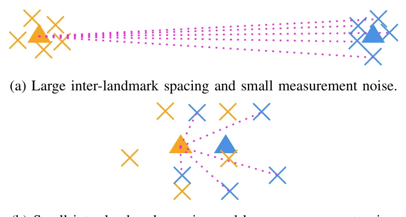

论文预览
新论文 · 日期 2026-07-28 · score 14 · cs.GR, cs.CV, cs.LG
作者：Felipe Nunes Carbone de Carvalho, Joyce de Morais Souza, Alan de Aguiar, Charles Morphy D. Santos, Jo\~ao Paulo Gois
评分 8.6/10
3DGS域随机化Sim-to-Real合成数据球谐系数
一句话工作总结：直接扰动 3DGS 的 SH、纹理与合成背景，在无需纹理网格的条件下生成 Sim-to-Real 域随机化训练数据。
传统 Domain Randomization pipeline 依赖 polygon mesh 驱动的经典图形渲染，而复杂有机主体的 textured mesh 提取和渲染较困难。本文提出在 3D Gaussian Splatting 参数空间中工作的 meshless DR framework，并用两个独立扰动流程生成随机化训练数据。Photometric DR 通过调制 spherical harmonics…
Domain Randomization (DR) is a standard technique for closing the Sim-to-Real gap, yet traditional DR pipelines rely on classical computer graphics rendering driven by polygon meshes. For complex organic subje…

新论文 · 日期 2026-07-28 · score 13 · cs.RO, cs.AI, cs.CV
作者：Yihao Zhang, Jungseok Hong, John J. Leonard
评分 9.5/10
对象 SLAM数据关联语义地标半增量估计基础模型特征
一句话工作总结：把数据关联、机器人位姿、对象地标位置与语义放入统一半增量估计框架，并支持类别标签和视觉特征两类语义观测。
地标观测与地标变量之间的数据关联长期以来一直是 SLAM 的核心难题，因为估计精度高度依赖观测是否关联到正确变量。深度学习使数据关联不仅能利用位置测量，还能利用对象地标语义，例如神经对象检测器的类别标签和视觉 foundation model 的特征向量。本文提出广义 data-association-free SLAM 框架，根据里程计以及地标的位置和语义测量，联合估计数据关联、机器人位姿、地标位置和地标语义。框…
Data association between landmark measurements and landmark variables has long been a central challenge in SLAM, as estimation accuracy depends critically on associating measurements with the correct landmark…

新论文 · 日期 2026-07-28 · score 11 · cs.GR, cs.CV
作者：Chun Gu, Xiaofei Wei, Zixuan Zeng, Yuxuan Yao, Li Zhang
评分 8.9/10
3DGS逆渲染互反射可微光线追踪材质分解
一句话工作总结：以可微二维 Gaussian ray tracing 补齐 visibility、indirect radiance 和 inter-reflection，使 3DGS 逆渲染更符合物理传输。
忠实的 inverse rendering 需要 visibility 与 indirect radiance 来解释 secondary illumination 和 inter-reflection，但面向 rasterization 的 Gaussian 表示通常不支持所需的 secondary-ray queries。IRGS++ 在 surface-oriented Gaussian primitives…
Faithful inverse rendering requires visibility and indirect radiance to explain secondary illumination and inter-reflection, yet rasterization-oriented Gaussian representations do not naturally support the sec…

新论文 · 日期 2026-07-28 · score 10 · cs.RO, cs.AI, cs.GR, cs.LG
作者：Qing Yang, Xun Wang, Ziguan Wang, Zhenjiang Li, Hongqiang Wang, Dongdong Weng
评分 8/10
Real2Sim2Real3DGSVLAROCm机器人操作
一句话工作总结：用 ROCm 串联 VLA 训练、3DGS+Genesis Real2Sim 数据生成和真实机器人部署，展示非 CUDA 锁定的 embodied pipeline。
本文给出一套面向 embodied manipulation 的端到端 AMD-accelerated technology stack，以开放 ROCm software stack 统一 data-center training、Radeon PRO simulation/rendering GPU 和 Ryzen AI edge compute，目标是证明 VLA manipulation policy 的训…
Physical AI -- the integration of large vision-language-action (VLA) models with embodied agents that act in the real world -- has emerged as the next major frontier for AI, echoed by industry leaders such as…

新论文 · 日期 2026-07-28 · score 10 · cs.GR, cs.DC
作者：Bo Jiang, Youyuan Liu, Taolue Yang, Sheng Di, Sian Jin
评分 7.7/10
3DGS粒子数据数据压缩分块训练实时渲染
一句话工作总结：以分块 3DGS 和可视化参数适配网络压缩数亿级粒子数据，在 65× 压缩下兼顾渲染质量与交互速度。
大规模粒子仿真会产生数亿粒子，使存储、传输和交互可视化承压；传统有损压缩器在 data space 中工作，无法保证 downstream visualization fidelity。ParticleGS 直接为 rendered image quality 学习 compact 3DGS representation，并组合 multi-stage/multi-orbit training、可在推理时适配用户指…
Large-scale particle simulations produce hundreds of millions of particles, straining storage, transfer, and interactive visualization. Existing lossy compressors such as SZ3 operate in data space and provide…